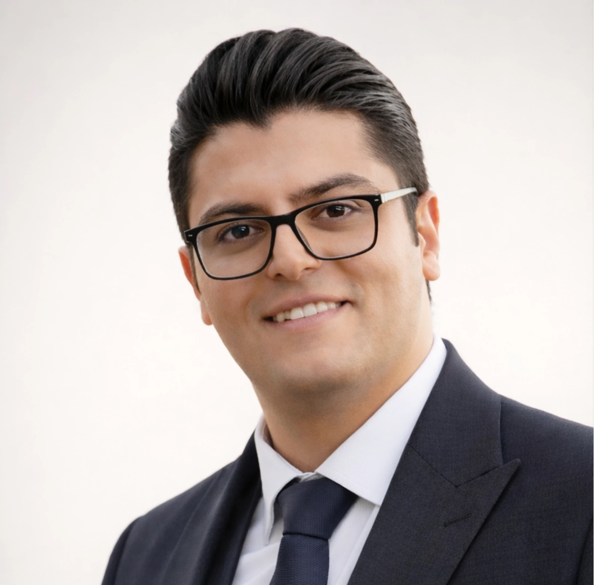

2026
Beyond Symbolic Recognition: Examining Access, Fidelity, and Student Outcomes in the Seal of Biliteracy
Peyman Jahanbin, Adam M. Brazil, Sarah C. Swyers, Meghan Ecker-Lyster & Michael Klein-Thibodeau
TESOL QuarterlyDOI
I study how well automated scoring judges spoken English, and whether it judges everyone fairly.
I study how automated systems score speech: where they agree with human raters, where they do not, and who is affected when they get it wrong.

Language assessmentAutomated speaking assessmentValidity & fairnessResponsible AI in educationExplainable machine learningL2 pronunciationMultilingual education & policySeal of BiliteracyQuantitative & mixed methods
Compares human audio ratings with transcript-based automated speaking scores in the Cambridge Speak & Improve corpus, looking at where they agree, where they meaningfully disagree, and what predicts the gap.
Interpretable MFCC-based models of how a first language shapes L2 pronunciation, plus reproducible workflows for feedback.
How the Seal of Biliteracy is implemented, who can earn it, how students qualify, and whether colleges and employers recognize it.
How districts report English learner results, which student groups become invisible, and how small cohort sizes create gaps in public data.
Coursework completed; advancement to candidacy expected October 2026.
Thesis: Investigating the Effect of Audio-Assisted Reading on Incidental Learning of a Grammatical Structure Among Iranian EFL Learners.
Instructor of record for undergraduate and graduate courses in TESOL methods, language assessment, practicum, multilingual learner instruction, and teacher education.
Research synthesis and policy analysis on Seal of Biliteracy implementation, equity, outcomes, and external recognition. Project SELILLA: $2.44 million, federally funded.
General English for undergraduate and graduate students; approximately 250 instructional hours.
Full list and citations on Google Scholar
Supervised content for a biweekly English-language magazine.
Planned and organized conferences, workshops, and classes, including national and international events.